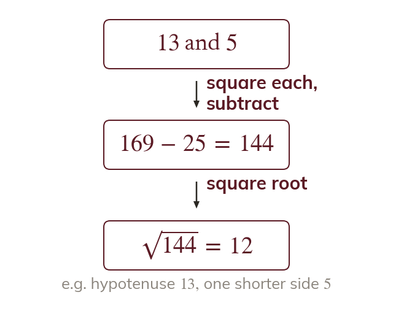
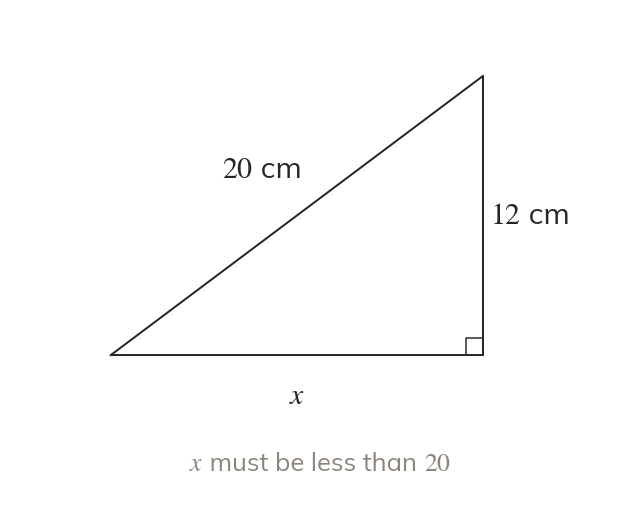
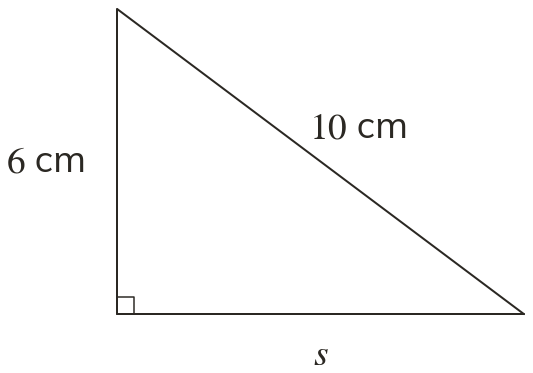
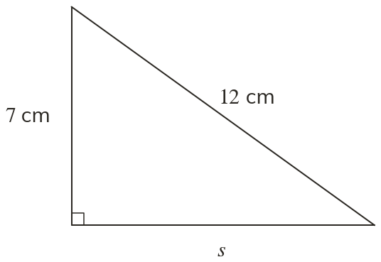
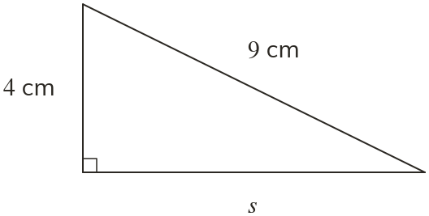
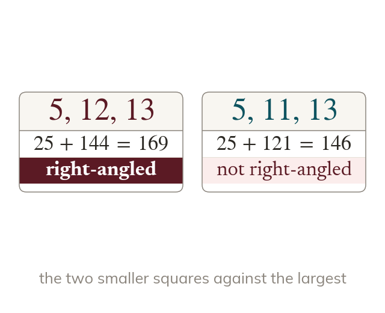
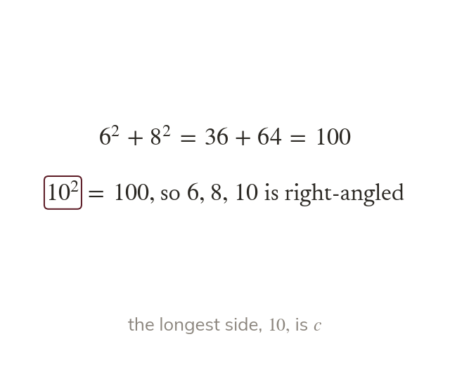
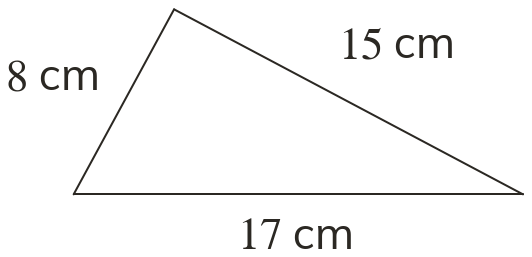
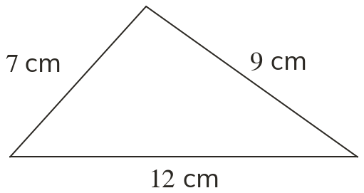

Often the longest side is the one you are given, as with a ladder of known length or a ramp whose sloping length is known. Then the theorem is run backwards.
By the end you’ll know…
Rearranging for a shorter side gives so the two squares are SUBTRACTED, not added.
Which of the two operations is needed is decided by whether the unknown side is the hypotenuse or one of the shorter sides.
A shorter side must come out smaller than the hypotenuse, and that is the check on the answer.
By the end you can
G5Calculate a shorter side of a right-angled triangle from the hypotenuse and the other shorter side.
G5Decide whether a triangle with three given side lengths is right-angled by testing whether
Work down the page at your own pace. Write every answer in your book first, then click to check it.
01
Do Now
About 5 minutes
1
Work out a) squared b)
a) b)
2
Make the subject of
3
The shorter sides of a right-angled triangle are cm and cm. Find the hypotenuse.
cm
Remember these?
LAST LESSONWhich side of a right-angled triangle is always the longest?
The hypotenuse, opposite the right angle
LAST WEEKI think of a number, double it and add to get Find the number.
LAST TERM
Work out
LAST YEAR
How many faces, edges and vertices does a cuboid have?
faces, edges and vertices
02
Learn
Read each card, then follow the worked examples one step at a time.

When the hypotenuse is known
With the hypotenuse known, subtract squares: The squares are subtracted, not added.
If the hypotenuse is known, a shorter side is found by subtracting squares: The squares are subtracted, not added.

Decide first, then check
Find the hypotenuse first, to decide whether to add or subtract. A shorter side must come out smaller than the hypotenuse.
WORKED EXAMPLE A
The hypotenuse is cm and one shorter side is cm. Find the other side.

Subtract the squares
Square each
Square root
Other side cm
WORKED EXAMPLE B
The hypotenuse is cm and one shorter side is cm. Find the other side to d.p.

Subtract the squares
Square each
Square root
Round to d.p. cm
YOUR TURN · a
The hypotenuse is cm and one shorter side is cm. Find the other side.
Hint. Follow the worked example: Subtract the squares → Square each → Square root → Other side
, cm
YOUR TURN · b
The hypotenuse is cm and one shorter side is cm. Find the other side to d.p.
Hint. Follow the worked example: Subtract the squares → Square each → Square root → Round to d.p.
, so cm
03
Check your understanding
Pick an answer. If it's wrong, the feedback tells you which mistake it was.
Which calculation finds the missing side?
Not quite. That's the side squared. One more step square root.
Not quite. Square first, then subtract
Not quite. You know the hypotenuse, so subtract
Yes. Hypotenuse squared minus the other side squared, then square root.
Find
Not quite. A shorter side can't be longer than Subtract
Not quite. Square first, then subtract
Not quite. is Square root it cm.
Yes. and cm.
Find to d.p.
Not quite. h is the hypotenuse, the longest side. Add the squares
Not quite. Square first, then add
Not quite. is Square root it cm.
Yes. and cm.
04
Practise
mark as you go
Checkpoint. Find the missing side of each right-angled triangle.Show your teacher before you go on
1.
Hypotenuse cm, one shorter side cm.
cm
2.
Hypotenuse cm, one shorter side cm, to d.p.
cm
3.
Shorter sides cm and cm. Find the hypotenuse to d.p.
cm
The hypotenuse is cm and one shorter side is cm. Find the other side to d.p.
1
Subtract the squares
2
Square each
3
Subtract
4
Square root
s
5
Round to d.p.
s
Write the blanks in your book first, then tap each one to check.
1
The hypotenuse is cm and one shorter side is cm. Find the other side.
cm
2
The hypotenuse is cm and one shorter side is cm. Find the other side to d.p.
cm
3
Find to d.p.

cm
4
The hypotenuse is m and one shorter side is m. Find the other side.
m
5
The hypotenuse is cm and one shorter side is cm. Ned writes What is his mistake? Find
He added the squares for a shorter side, subtract them
cm
EXT
In a right-angled triangle one shorter side is twice the other, and the hypotenuse is cm. Find the two shorter sides to d.p.
so and cm cm
05
Learn
Read each card, then follow the worked examples one step at a time.

A test, not a calculation
To test whether a triangle is right-angled, square all three sides. It is right-angled exactly when the two smaller squares add to the largest.

The longest side is c
The longest side is always the one tested as c. Testing a shorter side as c gives the wrong verdict.
The longest side is always the one tested as c. Testing with a shorter side as c makes a right-angled triangle look as if it is not.
WORKED EXAMPLE C
Is a triangle with sides cm, cm and cm right-angled?

Square the shorter two
Square the longest
Right-angledYes, as
WORKED EXAMPLE D
Is a triangle with sides cm, cm and cm right-angled?

Square the shorter two
Square the longest
Right-angledno, as is not
YOUR TURN · c
Is a triangle with sides cm, cm and cm right-angled?
Hint. Follow the worked example: Square the shorter two → Square the longest → Right-angled
so yes
YOUR TURN · d
A triangle has sides cm, cm and cm. Is it right-angled?
Hint. Follow the worked example: Square the shorter two → Square the longest → Right-angled
is the longest so yes
06
Check your understanding
Pick an answer. If it's wrong, the feedback tells you which mistake it was.
Is a triangle with sides cm, cm and cm right-angled?
Yes. so yes, it's right-angled.
Not quite. Use the longest side as c
Not quite. Square first against
Not quite. The longest side, must be c. Test against
Is a triangle with sides cm, cm and cm right-angled?
Not quite. Square first, and "close" isn't enough. Test against
Not quite. The longest side, must be c. Test against
Yes. but so it's not right-angled.
Not quite. The longest side, must be c. Test against
A triangle has sides cm, cm and cm. Which test is right?
Yes. The two shorter sides squared add to the longest squared
Not quite. The longest side, must be c
Not quite. The longest side, must be c
Not quite. Square first, then compare
07
Practise
mark as you go
Checkpoint.Show your teacher before you go on
1.
Is a triangle with sides cm, cm and cm right-angled?
yes
2.
Test a triangle with sides cm, cm and cm.
but not right-angled
Is a triangle with sides cm, cm and cm right-angled?
1
Find the longest side
cm is the longest, so it would be the hypotenuse
2
Square the shorter two and add
3
Square the longest
4
Right-angled?
, because the two totals are not equal
Write the blanks in your book first, then tap each one to check.
1
Is a triangle with sides cm, cm and cm right-angled?
so yes
2
Is a triangle with sides cm, cm and cm right-angled?
so no
3
Is a triangle with sides m, m and m right-angled?
so yes
4
Is a triangle with sides cm, cm and cm right-angled?
Longest is
so yes
5
Pia tests a triangle with sides cm, cm and cm. She writes not so it is not right-angled. What is her mistake?
She added the wrong pair add the squares of the two shorter sides
so it is right-angled
EXT
A triangle has sides cm, cm and cm. Find both values of that make it right-angled, to d.p. where needed.
x the hypotenuse so the hypotenuse so
08
Exit ticket
On paper, on your own, then check
1
When the hypotenuse is known, do you add or subtract the squares to find a shorter side, and how do you check the answer?
Subtract; the shorter side must be smaller than the hypotenuse
2
The hypotenuse is cm and one shorter side is cm. Find the other side.
cm
3
Is a triangle with sides cm, cm and cm right-angled?
so yes
Finished? Next lesson: 10.9.3 Pythagoras in Context.
09
How did it go?
Be honest: it's just for you
For each skill, tap the one that is true for you today. Your Revise pages start with anything you mark Not yet.
Calculate a shorter side of a right-angled triangle from the hypotenuse and the other shorter side.
Decide whether a triangle with three given side lengths is right-angled by testing whether
Your ratings are saved on this device only.
Practise more
After the lesson, or whenever you want more
Dr Frost
Log in, then search for a code to practise that skill.
288bUse Pythagoras' theorem to calculate a shorter side of a right-angled triangle.
288cDetermine if a triangle is right-angled or if it is possible to construct (converse of Pythagoras' theorem).